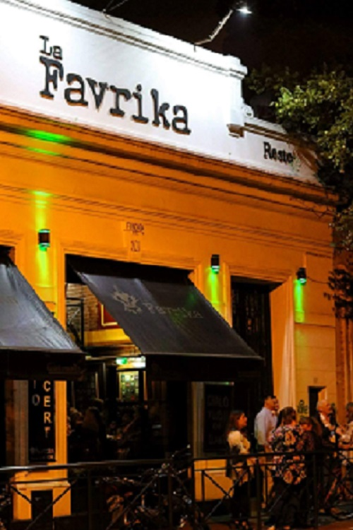

LA FAVRIKA RESTOBAR
Desde el año 2001 ofrecemos a nuestros clientes una seleccion de platos y una calida atencion en nuestras dos direcciones.


Desde el año 2001 ofrecemos a nuestros clientes una seleccion de platos y una calida atencion en nuestras dos direcciones.